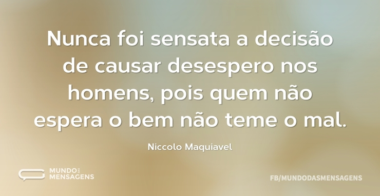

O plano essencial
A colocação
O fato de sermos seres humanos e termos conveitos e valores diferentes nos deixam quase que em todos os momentos em cima do muro
A grande questão de sermos tão diferentes e ao mesmo tempo tão iguais nos deixa sempre uma pergunta , o que eu penso é certo?
Preciso entender que aquilo que acredito nao me faz juiz de alguma situação onde se envolve valores e preceitos.
O ser humano sempre é capaz de entender quando se precisa. |
Nao ser prepotente nos ajuda a ser mais humano.|
- Sempre escute o outro lado, voce vai precisar.
- Só porque creio em algo nao significa que outra pessoa também deva acreditar.
- Seja sensato em tudo o que tentar expor.

Todos os direitos reservados .